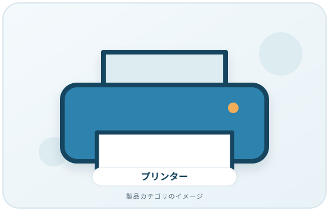
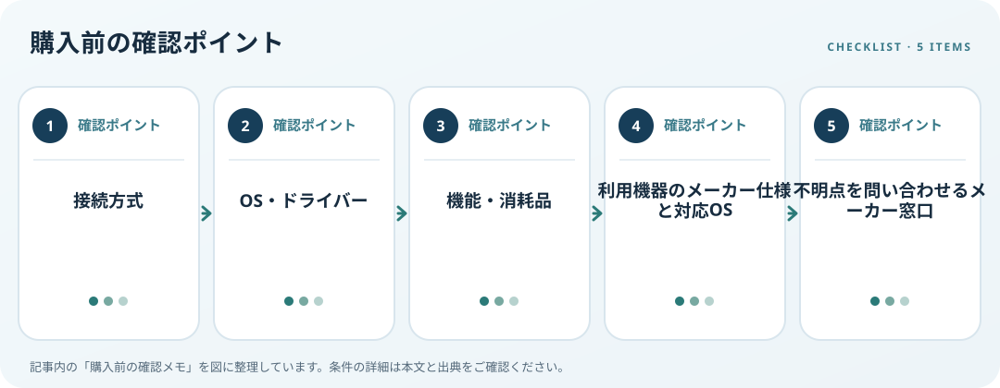

プリンターは印刷機能だけでなく、PCとの接続方法とOS対応を先に確認します。USBで直接つなぐのか、家庭内ネットワークから使うのかで確認点が異なります。MicrosoftはWindowsでローカルプリンターを追加する手順や、ネットワークプリンターの確認方法を案内しています。
画像・ボタンはAmazonアソシエイトリンクです。適格購入により紹介料を得る場合があります。

Amazon.co.jpで「プリンター USB Wi-Fi」を探す ↗

対応条件を仕様で確認
1台のPCの近くで使うか、複数機器から共有したいかを決めます。無線接続では、PCとプリンターが同じネットワークに接続されている必要がある場合があります。ルーターの条件や設定はメーカーの説明書で確認してください。Windowsが自動追加できても、全機能を使うためのドライバーが別途必要となる場合があります。
利用環境・設置条件を確認
印刷だけか、スキャン・コピー・両面印刷も必要かを書き出し、用紙サイズ、給紙方法、インク／トナーの型番も仕様表で調べます。対応OS一覧にPCの環境が含まれるか照合し、ARM機など特定環境の注意事項も確認します。速度や費用を比べるなら、同じ条件の資料を用います。
購入前の確認メモ
- 接続方式
- OS・ドライバー
- 機能・消耗品
- 利用機器のメーカー仕様と対応OS
- 不明点を問い合わせるメーカー窓口
記事は出典の公開情報を確認手順に整理したもので、製品の使用・実測・ランキング・価格・在庫の調査は行っていません。購入時には各メーカーの最新情報をご確認ください。
出典
- Add or install a printer in Windows — Microsoft Support（確認日: 2026-10-10）
- Fix printer connection and printing problems in Windows — Microsoft Support（確認日: 2026-10-10）